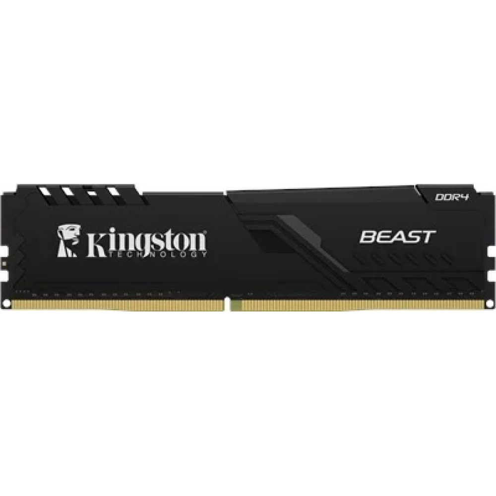

RAM (Rastgele Erişim Belleği)
RAM, bilgisayarın geçici belleğidir ve işlemcinin aktif olarak kullandığı verileri saklar. Uygulamaların hızlıca erişip çalışabilmesi için kritik bir rol oynar. Bilgisayar kapatıldığında içeriği silinir, bu yüzden kalıcı depolama için HDD veya SSD gibi çözümler kullanılır.
RAM'in Temel Özellikleri
RAM, yüksek hızda veri okuma ve yazma yeteneği sayesinde sistem performansını doğrudan etkiler. Yeterli RAM kapasitesi, çoklu görevlerde ve yoğun uygulamalarda sorunsuz bir deneyim sunar.
1️⃣ Geçici Depolama
RAM, bilgisayarın çalışma esnasında geçici olarak ihtiyaç duyduğu verileri saklar. Bu sayede uygulamalar hızlıca veri işleyebilir ve işlemci kesintisiz çalışır.
2️⃣ Hız ve Frekans
RAM'in çalışma hızı (MHz cinsinden ölçülür) ve veri aktarım kapasitesi, sistemin genel performansını belirler. DDR4 ve DDR5 gibi farklı nesiller, daha yüksek hız ve verimlilik sunar.
3️⃣ Kapasite
RAM kapasitesi, bilgisayarın aynı anda çalıştırabileceği uygulama sayısını ve verilerin hızlı erişim miktarını belirler. Genellikle gigabayt (GB) olarak ölçülür.
RAM Seçerken Dikkat Edilmesi Gerekenler
Seçiminizi yaparken göz önünde bulundurmanız gerekenler:
✔ Kapasite: İhtiyacınız olan uygulamaların sorunsuz çalışması için yeterli bellek alanı sunuyor mu?✔ Hız: Bellek frekansı ve gecikme süreleri, sistem performansında önemli rol oynar.
✔ Uyumluluk: Anakartınızın desteklediği RAM türü (DDR4, DDR5) ve maksimum kapasite ile uyumlu mu?
✔ Soğutma: Yüksek performans gerektiren işlemlerde RAM modüllerinin ısınması kontrol altında mı?
RAM Çeşitleri
💻 1. Masaüstü RAM Modülleri
Genellikle DIMM form faktöründe olan bu RAM'ler, masaüstü bilgisayarlar için yüksek kapasiteli ve performanslı çözümler sunar.
🖥 2. Dizüstü RAM Modülleri
SO-DIMM form faktöründe üretilen bu RAM'ler, taşınabilir bilgisayarların sınırlı alanında maksimum performans sağlamak üzere tasarlanmıştır.
🎮 3. Oyun ve Yüksek Performans RAM'leri
Özellikle oyun bilgisayarlarında tercih edilen bu modüller, yüksek hız, düşük gecikme ve estetik tasarımları ile öne çıkar.